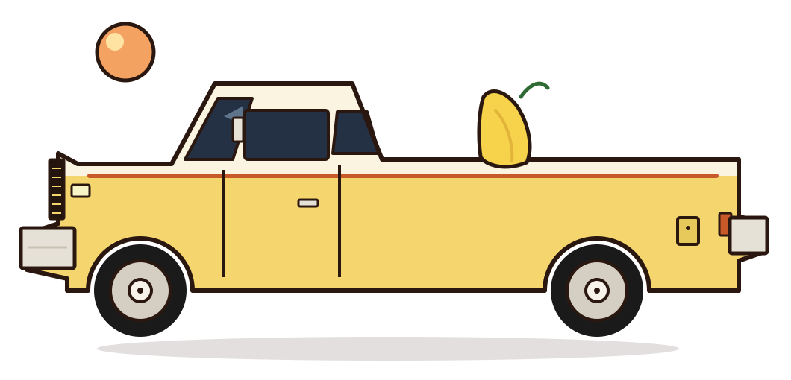

01
Engine bay
Engine & valvetrain
The bay is red, and the work in it is the valvetrain: a torque wrench, the slow kind of setting, then a check. Hood up, driveway, a 1979 engine.
1979 GMC Sierra Grande
A pale-yellow 1979 GMC Sierra Grande, and the DIY that keeps her moving.

Banana is two-tone pale yellow and cream, square as the decade she came from. The nickname is the color, and it stuck. She gets driven: 5 a.m. starts, night miles, and sunset on the Sierra Grande badge.
I’m an electrical engineer and a family man, and a squarebody enthusiast who lives for adventure. Lately that looks like a torque wrench in a red engine bay, a part borrowed from a CUCV donor, and a commute that still happens when something breaks.
This is the log of those jobs, a little longer than a caption. The photos and clips stay on Instagram, where they were posted first.
Featured
Three of the jobs. The full set, with a few more sentences each, is on the builds page.
The bay is red, and the work in it is the valvetrain: a torque wrench, the slow kind of setting, then a check. Hood up, driveway, a 1979 engine.
The pan and timing cover went back on with parts from a CUCV donor. The post says it straight: a quick drain before the install, CUCV 1031 donor.
The accelerator cable broke. Shoelaces got the truck home. A daily will ask for a fix you didn’t pack.
A few posts from @79_sierragrande. They’re a set, engine bay through sunset, kept together here instead of pinned to one job card.